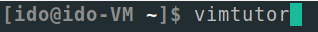
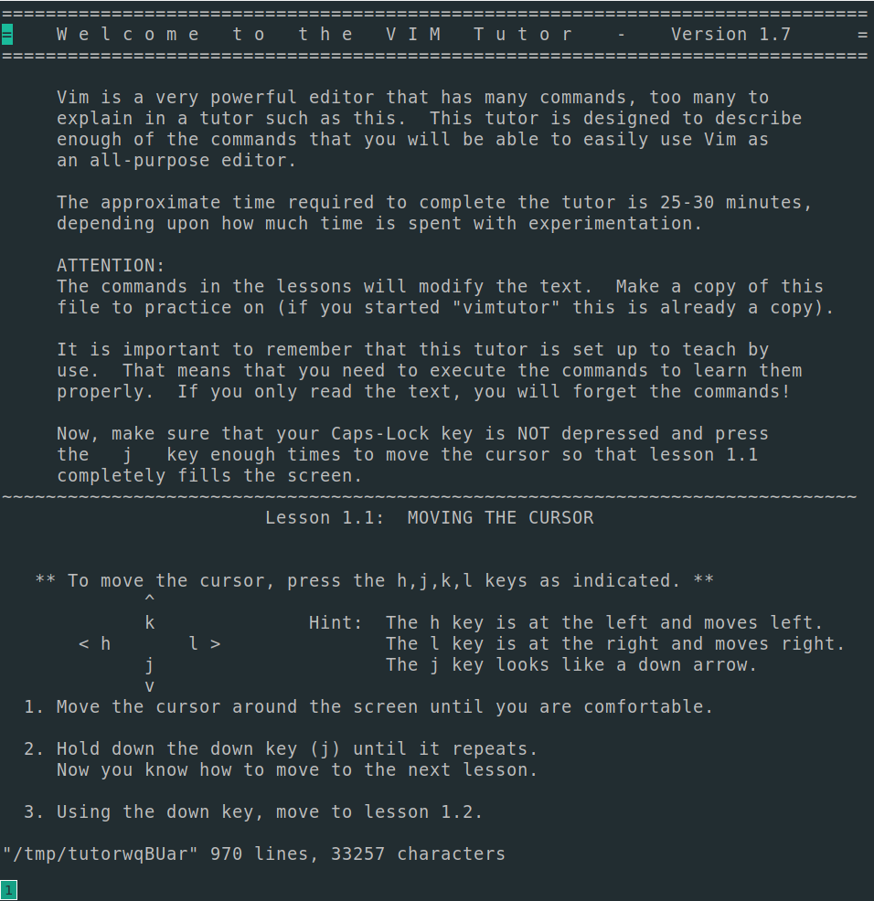

The best way to learn how to use vim is to do the vimtutor. To launch it just enter vimtutor in your terminal (after having installed vim).
Then, the terminal in wich you entered the command will open the vimtutor file using vim.
Follow this tutorial to learn the basic Vim commands and learn how to navigate efficiently threw Vim.